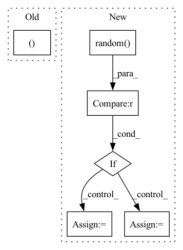

Pattern ID :11221
Before Change
T.Resize((288, 384)), // for computational efficiency
T.RandomRotation(5),
T.Resize(round(288 * s)),
T.RandomCrop((257, 353 )),
T.RandomHorizontalFlip()
])
color_jitter = T.ColorJitter(0.4, 0.4, 0.4) // only for RGBAfter Change
depth = TF.crop(depth, i, j, h, w)
// Random horizontal flipping
if random.random() > 0.5 :
rgb = TF.hflip(rgb)
depth = TF.hflip(depth)
color_jitter = T.ColorJitter(0.4, 0.4, 0.4)
rgb = color_jitter(rgb)In pattern: SUPERPATTERN
Frequency: 4
Non-data size: 6
Instances Fragment ID: 38321867
Project Name: liviniuk/dorn_depth_estimation_pytorch
Commit Name: 0ea97813b7efc228c977816051b52c28e61b596c
Time: 2020-03-31
Author: viktor.liviniuk@gmail.com
File Name: data.py
M Class Name: NYUDataset
N Class Name: NYUDataset
M Method Name: train_transform(3)
N Method Name: train_transform(3)
M Parent Class: Dataset
N Parent Class: Dataset
M File Name: data.py
N File Name: data.py
M Start Line: 53
M End Line: 68
N Start Line: 50
N End Line: 77
Before Change
def __call__(self, img):
cutout_image
h, w = img.shape[:2]
mask = np.ones((h, w ), np.float32)
for n in range(self.n_holes):
y = np.random.randint(h)After Change
return left, top, h, w, img_c
def __call__(self, img):
if random.random() < self.p :
left, top, h, w, ch = self.get_params(img, self.scale, self.ratio)
if self.pixel_level:
c = np.random.randint(*self.value, size=(h, w, ch), dtype="uint8")
else:
c = random.randint(*self.value)
if self.pixel_level:
c = PIL.Image.fromarray(c)
img.paste(c, (left, top, left + w, top + h))
return img
return img Fragment ID: 38321857
Project Name: cavalleria/cavaface
Commit Name: 714704fafc3e0f9569a15822bb45af6747a7c4be
Time: 2020-07-20
Author: 605370459@qq.com
File Name: dataset/utils.py
M Class Name: Cutout
N Class Name: Cutout
M Method Name: __call__(2)
N Method Name: __call__(2)
M Parent Class: object
N Parent Class: object
M File Name: dataset/utils.py
N File Name: dataset/utils.py
M Start Line: 83
M End Line: 96
N Start Line: 136
N End Line: 148
Before Change
for t in range(T - 1):
graph_in, graph_target = out_frames[-1], snapshots[t+1].to(device).clone()
in_x = graph_in.x.clone()
if self.include_actions: // append action to node features
in_x = torch.cat([in_x, graph_in.action], dim=-1)
pred_x, rnn_h = self.forward(in_x, graph_in.edge_index, graph_in.edge_attr, rnn_h)After Change
for t in range(T - 1):
graph_target = snapshots[t+1].to(device)
if t < input_length or random.random() < teacher_forcing_ratio : // obs. phase
graph_in = snapshots[t].to(device)
else: // pred. phase
graph_in = out_frames[-1]
in_x = graph_in.x.clone()
if self.include_actions: // append action to node features Fragment ID: 38321921
Project Name: ais-bonn/vp-suite
Commit Name: 736664b402b16d7a7bb3060ef33ec754f9422591
Time: 2021-10-13
Author: boltres@ais.uni-bonn.de
File Name: models/graph_pred/rgcn.py
M Class Name: RecurrentGCN
N Class Name: RecurrentGCN
M Method Name: pred_n(4)
N Method Name: pred_n(4)
M Parent Class: torch.nn.Module
N Parent Class: torch.nn.Module
M File Name: models/graph_pred/rgcn.py
N File Name: models/graph_pred/rgcn.py
M Start Line: 38
M End Line: 51
N Start Line: 37
N End Line: 57